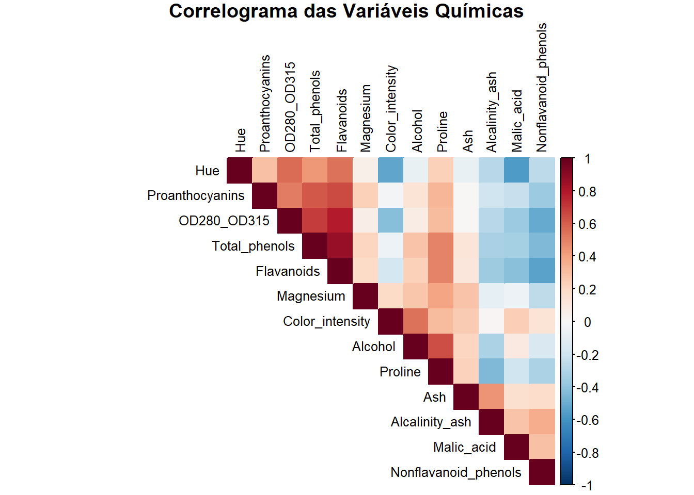
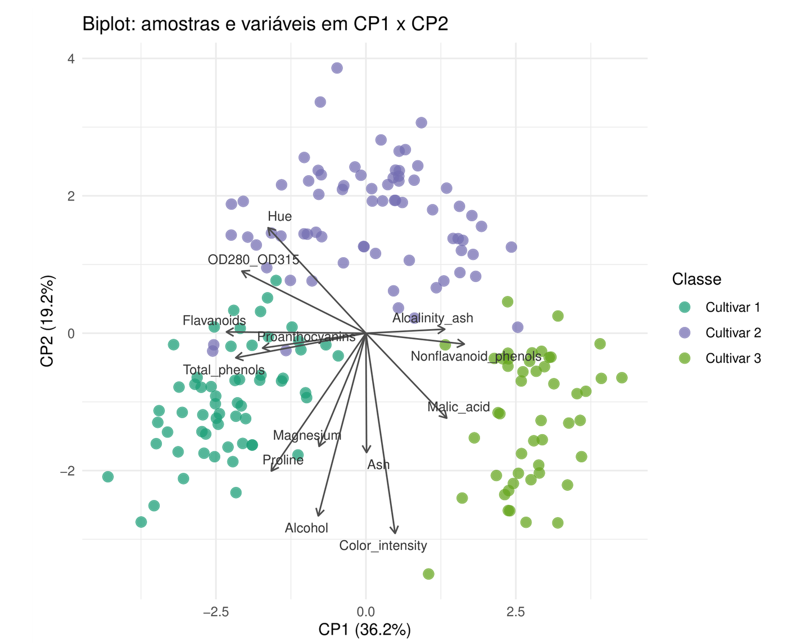
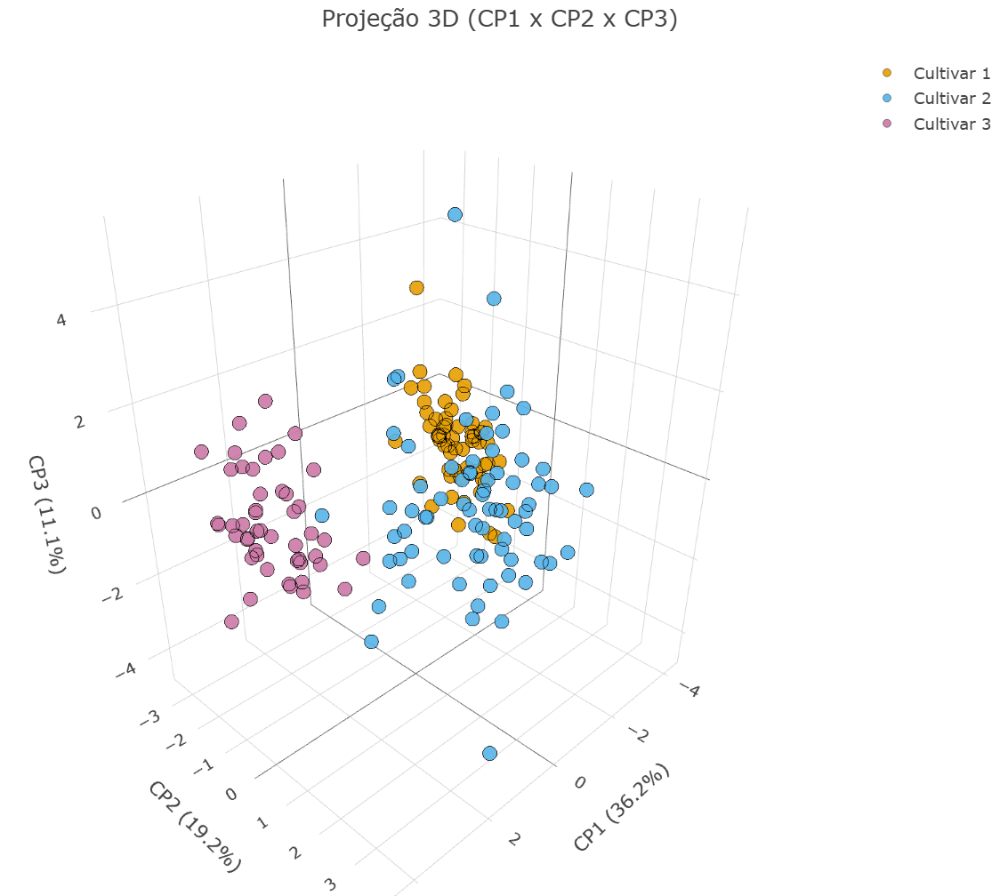
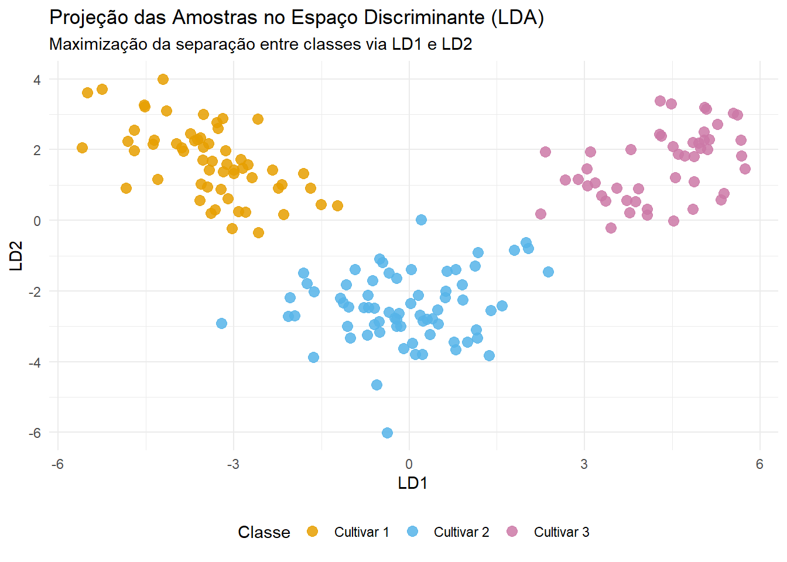

Estudo de caso · Controle de qualidade e classificação
Da química à procedência
Como investigar a estrutura físico-química de 178 vinhos italianos e certificar a cultivar de origem a partir de 13 variáveis laboratoriais — articulando PCA, Análise Fatorial e Análise Discriminante (LDA e QDA).
178 amostras, 13 variáveis químicas e três cultivares
O projeto examina o conjunto clássico Wine (UCI Machine Learning Repository), composto por medições físico-químicas de 178 amostras de vinhos produzidos em uma mesma região da Itália, distribuídas em três castas distintas: 59 amostras na Cultivar 1, 71 na Cultivar 2 e 48 na Cultivar 3.
Em cada amostra foram mensuradas 13 variáveis contínuas — incluindo teor alcoólico, ácido málico, cinzas, alcalinidade das cinzas, magnésio, fenóis totais, flavonoides, fenóis não flavonoides, proantocianinas, intensidade de cor, tonalidade (hue), razão de absorbância OD280/OD315 e prolina.
02 / Objetivo
Simular o problema real de uma vinícola ou órgão certificador: compreender os eixos químicos de diferenciação e auditar a origem de lotes desconhecidos com medida explícita de confiança.
R · Quarto · PlotlyPCA · Análise FatorialLDA · QDA · LOOCV
03 / Problema exploratório e métodos
Escalas heterogêneas e dependência linear
A inspeção exploratória revelou dois desafios imediatos: as variáveis operam em ordens de grandeza discrepantes — a prolina atinge a casa dos milhares, enquanto fenóis não flavonoides variam entre 0 e 1 — e apresentam fortes correlações lineares, sobretudo no bloco fenólico (fenóis totais, flavonoides e absorbância OD280/OD315).
Por essa razão, toda a modelagem exploratória partiu de dados padronizados (matriz de correlação), evitando que variáveis de maior variância numérica dominassem artificialmente as combinações lineares.
PCA manualDecomposição espectral da matriz de correlação: 2 componentes retêm 55,4% da variância e 3 alcançam 66,5%.
Análise FatorialEstimação por máxima verossimilhança com rotação Varimax para interpretar fatores latentes e comunalidades.
LDA e QDARegras de classificação supervisionada comparadas via validação cruzada Leave-One-Out (LOOCV).

Correlograma das 13 variáveis químicas: a colinearidade acentuada no bloco fenólico fundamenta a redução de dimensionalidade e a modelagem fatorial.
04 / Minha contribuição e evidências em Componentes Principais
Decomposição espectral explícita e interpretação geométrica
Desenvolvi integralmente o código em R e o relatório dinâmico em Quarto, implementando a PCA passo a passo pela decomposição espectral da matriz de correlação (cálculo direto de autovalores, autovetores e escores padronizados, sem recorrer apenas a funções encapsuladas).
A CP1 (36,2%) sintetiza a estrutura fenólica do vinho; a CP2 (19,2%) contrapõe intensidade de cor e teor alcoólico à tonalidade; e a CP3 (11,1%) captura o perfil mineral (cinzas e alcalinidade). Mesmo sem utilizar os rótulos de classe no ajuste, as três cultivares já formam agrupamentos bem delimitados nos planos bidimensional e tridimensional.

Biplot em CP1 × CP2 (55,4% da variância total): associação direta entre a posição de cada cultivar e os vetores físico-químicos.

Projeção tridimensional (CP1 × CP2 × CP3 — 66,5% da variância) extraída do widget interativo em Plotly do relatório.
05.A / Análise Fatorial
Aderência estatística na escolha do número de fatores
Na Análise Fatorial por máxima verossimilhança, o teste formal de razão de verossimilhança rejeitou as especificações de 1 a 5 fatores (p < 0,05) e indicou ajuste adequado apenas a partir de 6 fatores (p = 0,3093).
Ainda que 6 fatores representem uma compressão moderada diante das 13 variáveis originais, respeitar o teste de hipóteses preservou a validade do modelo e evidenciou comunalidades próximas da unidade em cinzas, magnésio e intensidade de cor (0,995), distinguindo-as de variáveis com alta variância específica, como fenóis não flavonoides (comunalidade de 0,417).
05.B / Decisão técnica em classificação
Por que adotar a LDA frente à QDA
Na avaliação por Leave-One-Out Cross-Validation (LOOCV), a QDA atingiu 99,44% de acurácia (1 erro em 178 amostras) e a LDA alcançou 98,88% (2 erros em 178 amostras).
Diante de desempenhos equivalentes na prática, a decisão técnica recaiu sobre a LDA pelo princípio da parcimônia: ao estimar uma única matriz de covariância combinada (pooled) em vez de três matrizes específicas por casta, o modelo reduz substancialmente o número de parâmetros estimados e ganha estabilidade em amostras moderadas.
06 / Resultados de classificação e auditoria de lotes
Do espaço discriminante à regra operacional de inspeção
A projeção nas duas funções discriminantes lineares (LD1 e LD2) separa as três cultivares sem sobreposição relevante entre grupos. Para testar o uso prático do classificador na rotina de certificação, foram simuladas seis novas amostras desconhecidas (duas por cultivar) sob distribuição normal multivariada com matriz de covariância pooled.
A LDA classificou corretamente todas as seis amostras. Cinco lotes obtiveram probabilidade a posteriori acima de 99%, enquanto o Lote Simulado 2 foi alocado na Cultivar 1 com probabilidade de 77,18% — ilustrando como probabilidades intermediárias funcionam como gatilho objetivo para reanálise laboratorial antes de emitir um laudo.
Em controle de qualidade, acertar o rótulo não basta: quantificar a incerteza a posteriori evita certificar lotes limítrofes sem segunda verificação.

Espaço discriminante linear (LD1 × LD2): maximização da razão entre variabilidade interclasses e intraclasses.
07 / Entregáveis e limites
Relatório reprodutível completo
Todo o código-fonte em R, as tabelas de autovalores, cargas fatoriais rotacionadas, matrizes de confusão por LOOCV e gráficos interativos estão publicados no relatório completo do projeto.
Limite metodológico: as acurácias estimadas via LOOCV referem-se às 178 amostras históricas de uma mesma região italiana, e os novos lotes foram simulados sob normalidade multivariada. Em ambiente produtivo real, oscilações de safra e calibração analítica exigiriam validação externa com amostras independentes.
08 / Aprendizados
Complementaridade entre exploração e predição
Articular PCA, Análise Fatorial e Análise Discriminante evitou tratar a classificação como caixa-preta: a geometria das componentes principais e os fatores latentes explicam o significado químico das diferenças que, em seguida, sustentam a separação linear da LDA.
A implementação algébrica manual da PCA também consolidou o domínio sobre padronização, decomposição espectral e reprodutibilidade de análises multivariadas em R.
Síntese técnica
Competências demonstradas
Implementação manual da PCA via decomposição espectral da matriz de correlação em R.
Seleção formal do número de fatores por teste de razão de verossimilhança e rotação Varimax.
Comparação rigorosa entre LDA e QDA com validação Leave-One-Out (LOOCV) e critério de parcimônia.
Tradução de probabilidades a posteriori em critério prático de auditoria de qualidade.